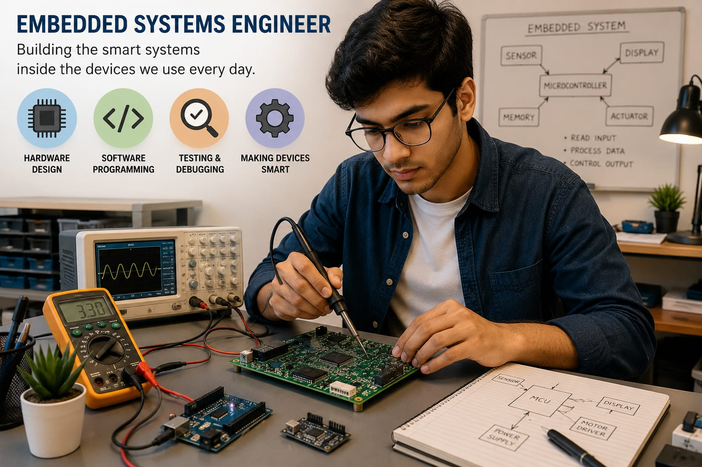

- Think about your smart watch, washing machine, smart TV, or car.
- Have you ever wondered how they are functioning?
- Inside these devices, there is a smart system that controls how they work.
- The person who creates and programs these smart systems is called an Embedded Systems Engineer.
- 👉 In simple words: Embedded Systems Engineers create the hardware and software that make electronic devices work intelligently.
Embedded Systems Engineer
🧑🎨 What Do They Do?

🎓 How to Become an Embedded Systems Engineer
These beginner-level courses help students learn electronics, microcontrollers, computer hardware, programming, and embedded systems fundamentals.
Diploma in Electronics Engineering
Duration: 3 Years
Eligibility: Class 10 Pass
Entrance Exam: Polytechnic Entrance Exam / Merit-Based Admission
Diploma in Electronics and Communication Engineering (ECE)
Duration: 3 Years
Eligibility: Class 10 Pass
Entrance Exam: Polytechnic Entrance Exam / Merit-Based Admission
Diploma in Electrical and Electronics Engineering (EEE)
Duration: 3 Years
Eligibility: Class 10 Pass
Entrance Exam: Polytechnic Entrance Exam / Merit-Based Admission
📝 Exam Details
(Click on the exam name to see full details)
Polytechnic Entrance Exam Merit-Based AdmissionNote: Most Embedded Systems Engineers continue with B.Tech in Electronics, ECE, Electrical Engineering, Embedded Systems, or related fields after diploma studies. Advanced embedded design roles usually require strong programming, electronics, and microcontroller knowledge.
These undergraduate programs help students learn embedded systems, microcontrollers, electronics, programming, hardware-software integration, and real-time system design.
B.Tech in Electronics and Communication Engineering (ECE)
Duration: 4 Years
Eligibility: 10+2 Pass with Physics, Chemistry, and Mathematics (Minimum 45%–50% marks)
Entrance Exam: JEE Main / JEE Advanced / State Engineering Entrance Exams
B.Tech in Computer Science and Engineering (Internet of Things)
Duration: 4 Years
Eligibility: 10+2 Pass with Physics, Chemistry, and Mathematics (Minimum 50%–60% marks)
Entrance Exam: JEE Main / University Aptitude Tests / State Engineering Entrance Exams
B.Tech in Electrical and Electronics Engineering (EEE)
Duration: 4 Years
Eligibility: 10+2 Pass with Physics, Chemistry, and Mathematics (Minimum 45%–50% marks)
Entrance Exam: JEE Main / JEE Advanced / State Engineering Entrance Exams
📝 Exam Details
(Click on the exam name to see full details)
JEE Main JEE Advanced State Engineering Entrance ExamsNote: You do not need a specialized Embedded Systems degree to enter this field. B.Tech in ECE, EEE, CSE (IoT), Instrumentation, or related branches can lead to Embedded Systems Engineering careers when combined with programming, microcontroller, and hardware development skills.
These lateral-entry programs help diploma holders strengthen their knowledge in embedded systems, electronics, programming, microcontrollers, hardware design, and real-time system development.
B.Tech Lateral Entry in Electronics and Communication Engineering (ECE)
Duration: 3 Years (Direct Entry into 2nd Year)
Eligibility: 3-Year Engineering Diploma in Electronics, ECE, or related technical branches with at least 45% marks
Entrance Exam: State Lateral Entry Entrance Tests (JELET, ECET, LEET, etc.)
B.Tech Lateral Entry in Electrical and Electronics Engineering (EEE)
Duration: 3 Years (Direct Entry into 2nd Year)
Eligibility: 3-Year Engineering Diploma in Electrical, Electronics, ECE, or related technical branches with at least 45% marks
Entrance Exam: State Lateral Entry Entrance Tests (ECET, JELET, LEET, etc.)
B.Tech Lateral Entry in Computer Science Engineering / Internet of Things (IoT)
Duration: 3 Years (Direct Entry into 2nd Year)
Eligibility: 3-Year Engineering Diploma in Computer Science, Electronics, Electrical, ECE, or related branches
Entrance Exam: State Lateral Entry Entrance Tests
Note: Embedded Systems Engineers are commonly recruited from ECE, EEE, Computer Science, IoT, and related branches. During your degree, focus on C/C++ programming, microcontrollers, RTOS, embedded Linux, and hands-on hardware projects to build industry-ready skills.
These advanced programs help graduates specialize in embedded systems, firmware development, real-time operating systems (RTOS), IoT devices, microcontrollers, and hardware-software integration.
M.Tech in Embedded Systems
Duration: 2 Years
Eligibility: B.Tech / B.E. in ECE, EEE, CSE, IT, Instrumentation, Electronics, or related branches
Entrance Exam: GATE / State PGCET / University PG Entrance Tests
PG Diploma in Embedded System Design
Duration: 6 Months – 1 Year
Eligibility: B.Tech / B.E. in ECE, EEE, CSE, IT, EI, or related branches
Entrance Exam: Institutional Entrance Tests / Industry-Sponsored Selection Tests (e.g., C-DAC CCAT)
M.Tech in VLSI & Embedded Systems
Duration: 2 Years
Eligibility: B.Tech / B.E. in Electronics, ECE, EEE, Instrumentation, or related branches
Entrance Exam: GATE / University PG Entrance Tests
Note: Higher studies are optional for Embedded Systems Engineers, but they can help you specialize in areas such as firmware development, RTOS, IoT systems, automotive electronics, industrial automation, and advanced embedded product design.
Note:
(Age limits, marks, and admission process may vary depending on the college or state. These courses are available in many colleges and universities across India. You can choose colleges based on your location, budget, and entrance exams.)
🏛️ Top Colleges for Embedded Systems Engineer
(Tap on a college to visit the official website)
After 10th Pass (Diplomas)
Government Polytechnic, Pune PSG Polytechnic College, Coimbatore Government Polytechnic, Mumbai MEI Polytechnic, Bangalore Sri Ramakrishna Polytechnic College, CoimbatoreAfter 12th Pass (Bachelor's Degrees)
Vellore Institute of Technology (VIT), Vellore Manipal Institute of Technology (MIT), Manipal Amrita Vishwa Vidyapeetham, Coimbatore RV College of Engineering (RVCE), Bangalore Galgotias University, Greater Noida PSG College of Technology, Coimbatore Thiagarajar College of Engineering, MaduraiAfter Diploma (Lateral Entry)
Delhi Technological University (DTU), New Delhi PSG College of Technology, Coimbatore COEP Technological University, Pune Anna University, Chennai Jadavpur University, KolkataAfter Graduation (Master's Degrees / PG Diplomas)
Birla Institute of Technology and Science (BITS), Pilani Indian Institute of Technology (IIT) Hyderabad, Hyderabad National Institute of Technology (NIT), Jamshedpur Centre for Development of Advanced Computing (C-DAC), Bangalore Emertxe Information Technologies, Bangalore IISC, BangaloreSTEP 1
Imagine you are working as an Embedded Systems Engineer.
STEP 2
Your company asks you to make a smart watch.
STEP 3
You decide what the watch should do and how it should work.
STEP 4
You create the smart system inside the watch that controls all its functions.
STEP 5
You test whether the watch can count steps when you walk, track health data, and display messages correctly.
STEP 6
If something does not work properly, you fix it and test it again.
STEP 7
If you enjoy electronics, technology, and building smart devices, this career may be right for you.
Where do Embedded Systems Engineers work? (Job Roles + Growth)
These are some roles you can explore in Embedded Systems Engineering.
You usually start with beginner roles and grow with experience.
🟢 Beginner Roles
🧪
Junior Firmware Tester
(After Short-Term Certification / Diploma)
Runs hardware tests and installs basic firmware on devices.
🔧
Graduate Hardware Engineer Trainee
(After Diploma / B.Tech)
Tests circuit boards and assists senior engineers with product development.
🔵 Mid-Level Roles
💻
Embedded Software Engineer
(After B.Tech + Experience)
Develops firmware that controls smart electronic devices.
📡
IoT Solutions Architect
(After B.Tech + Industrial Certification)
Connects sensors and devices to cloud-based networks.
🟣 Advanced Roles
⚙️
RTOS Expert
(After M.Tech / Advanced Specialization)
Builds real-time software for automobiles and medical equipment.
🌍
VP of Hardware Systems
(After Advanced Executive Program + Experience)
Leads engineering teams and manages smart product development.
🏭
Consumer Electronics Companies
Build smart home and electronic devices.
🚗
Automotive Technology Companies
Develop software for modern vehicles.
📱
IoT & Smart Device Companies
Create connected smart devices and sensors.
🏥
Medical Equipment Companies
Design software for medical devices.
✈️
Aerospace & Defense Organizations
Build systems for aircraft and satellites.
🤖
Industrial Automation & Robotics Companies
Develop robots and automated machines.
(Click Yes or No for each question)
1. Have you ever wondered how a smart watch, smart TV, or washing machine knows what to do?
2. Are you interested in learning how electronic devices work?
3. Did you know that many electronic devices have a smart system inside that controls how they work?
4. Would you like to learn how engineers create these smart systems inside electronic devices?
5. Imagine you create the smart system inside a Smart TV. It helps the TV respond to the remote, play videos, and run apps. Does this sound exciting to you?